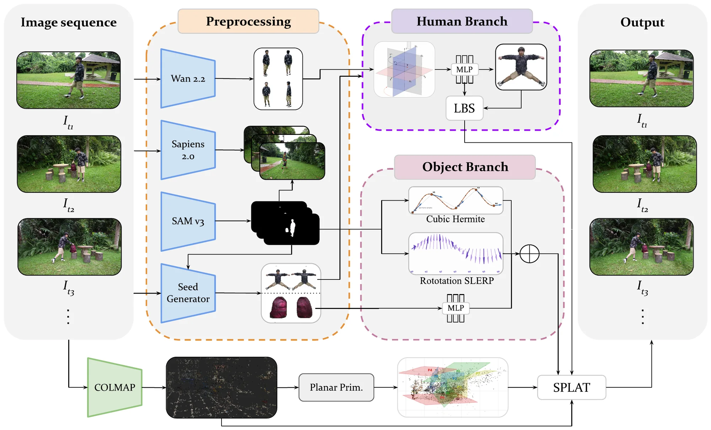
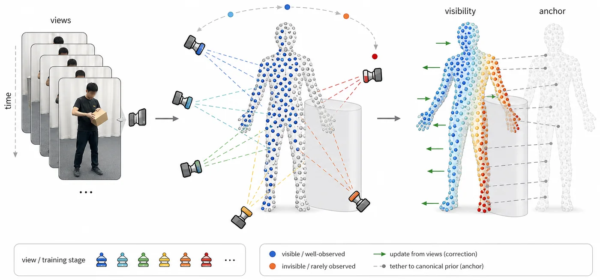
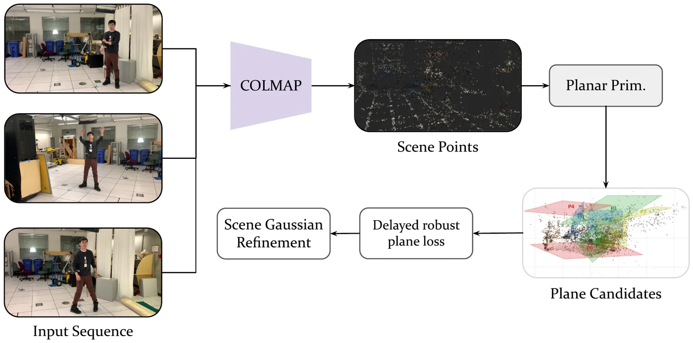
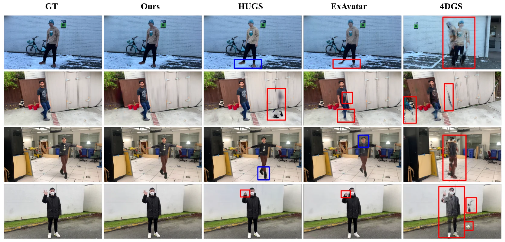

Vision and Image Processing Lab, University of Waterloo, Canada
Input videoCoGS render
One monocular video in, a composed human, object and scene out. Left: the HOSNeRF Backpack sequence. Right: CoGS renders the same camera by compositing an SMPL-driven human, a rigidly moving backpack and a static scene, each a separate set of 3D Gaussians.
Abstract
Monocular human-object reconstruction is underconstrained because articulated body motion, rigid object motion, and the static scene share pixels but obey different dynamics. Without component-aware priors, moving objects can be absorbed by the human or background, persistently hidden body regions remain unconstrained, and low-texture scene surfaces receive little geometric support. We present CoGS, a compositional Gaussian-splatting framework for human-object scene reconstruction. CoGS decomposes the video into three branches: an articulated human field, a rigid manipulated-object field, and a static scene field, each optimized with supervision matched to its dynamics. To address missing human evidence, CoGS builds the canonical human from generative completion views that synthesize body regions the input video never observes, then uses visibility-aware correction so observed Gaussians adapt to real pixels while hidden regions remain anchored to the completed prior. For the static scene, CoGS introduces delayed scene-planar regularization over compatible planar primitives, providing low-frequency structure. A compact staged optimization stabilizes the branches before final compositional refinement. On HOSNeRF and NeuMan, CoGS achieves state-of-the-art full-frame rendering, while human-focused ablations and diagnostics expose the role and limits of each branch.
How it works
Preprocessing aligns COLMAP cameras, SMPL motion, human and object masks, an object trajectory, planar primitives and a completed canonical human in one world frame. These are soft inputs: CoGS refines them while it optimises three Gaussian branches and composites them in a shared renderer.

Decomposition
Three branches, three motion models
CompositeHumanObjectScene
An SMPL-deformed human, a keyframed rigid object whose path is a C¹ cubic-Hermite curve with SLERP rotations, and a world-fixed scene. Keeping the object separate stops its pixels near contact from being absorbed by the body or baked into the background.
Human prior
Complete the body, anchor what the video never sees

The canonical human is built from generated completion views (Wan) of sides the video never shows. Each Gaussian gets a visibility score vi, the fraction of frames where it lands inside the human mask, outside the object mask, with real opacity; an anchor of weight 1−vi keeps hidden Gaussians on the prior while visible ones follow the pixels.
Scene
Delayed planar primitives

Planes extracted from COLMAP geometry act as weak support for floors and walls. Only compatible scene Gaussians (close, normal-consistent, visible) are assigned to a plane, and a robust point-to-plane loss switches on after photometric warm-up, so planes shape stable geometry instead of dictating it.
Optimisation
Stabilise each branch, then compose
STAGES I–IIHuman0–4k, polish to 5k
Prior seed, RGB and mask terms, visibility anchoring; no other branch competes for foreground pixels.
STAGES III–IVObject0–4k, polish 4–6k
Human frozen; trajectory, silhouette, edge and rotation-smoothness terms; densification delayed and bounded.
STAGES V–VICompose5.5k, resume to 15k
Fresh scene field; full-image refinement with anchoring and the delayed planar term. The main quality-improving stage.
Removing the final compositional refinement costs the most in the paper's ablation (NeuMan Lab LPIPS 0.049 → 0.121); joint training from iteration 0 is nearly neutral.
Results on HOSNeRF
Six monocular human-object interaction videos. Renders are from the paper's final models; pick a sequence, then compare against the input or see each branch on its own.
Wipe against the input
Drag across the frame: CoGS on the left, the input frame on the right, same camera, at the input's full ~1280×718 resolution (twice the training resolution, so per-frame PSNR sits below the paper's). Frames are evenly spaced among every fifth frame with the person and object in view, no heavy motion blur, and PSNR ≥ 22 dB.
frame
CoGSInput
Against baselines
The same sequence rendered by HUGS and 4DGS, from the authors' comparison frames.
frame
InputCoGSHUGS4DGS
Quantitative comparison
Full-frame held-out rendering, numbers as reported in the paper. HOSNeRF: 16 uniformly sampled test frames per sequence; the last row is the change over the strongest baseline in each column.
HOSNeRF per-sequence full-frame comparison
Method
Backpack
Tennis
Suitcase
Playground
Dance
Lounge
PSNR↑
LPIPS↓
PSNR↑
LPIPS↓
PSNR↑
LPIPS↓
PSNR↑
LPIPS↓
PSNR↑
LPIPS↓
PSNR↑
LPIPS↓
K-Planes
19.05
0.557
19.31
0.536
18.64
0.602
17.92
0.635
18.17
0.623
24.21
0.453
D²NeRF
20.52
0.608
23.97
0.540
20.99
0.645
21.23
0.616
19.92
0.647
27.13
0.509
Nerfies
19.56
0.559
22.12
0.443
19.01
0.555
21.14
0.533
19.37
0.524
25.90
0.342
HyperNeRF
19.62
0.587
21.26
0.510
19.41
0.607
21.67
0.578
19.30
0.601
27.25
0.332
NeuMan
21.21
0.478
23.17
0.442
20.84
0.551
21.46
0.551
21.19
0.490
28.40
0.341
4DGS
24.49
0.192
26.57
0.162
17.98
0.460
24.34
0.222
21.34
0.212
30.50
0.067
D3DGS
24.06
0.099
25.09
0.125
17.85
0.453
23.93
0.141
21.07
0.117
26.90
0.072
E-D3DGS
24.78
0.146
26.53
0.161
18.05
0.461
24.37
0.206
23.87
0.159
30.04
0.086
Ex4DGS
18.07
0.433
17.90
0.399
15.25
0.557
16.36
0.535
17.08
0.529
23.15
0.310
ExAvatar
24.15
0.107
23.57
0.160
20.32
0.260
25.30
0.129
23.32
0.170
29.43
0.048
HOSNeRF
22.56
0.243
24.15
0.320
21.74
0.382
22.67
0.336
22.63
0.248
27.74
0.227
CoGS (ours)
25.38
0.094
26.93
0.071
24.25
0.117
25.62
0.116
25.08
0.092
30.94
0.031
vs. best baseline
+2.4%
+4.7%
+1.4%
+43.5%
+11.5%
+55.0%
+1.3%
+10.1%
+5.1%
+21.4%
+1.4%
+35.4%
bestsecondthird
NeuMan
Moving-camera videos of a person in a static scene, evaluated on the benchmark held-out images (HUGS protocol). CoGS is first on every scene and metric.
NeuMan full-frame comparison
Method
Seattle
Citron
Parking
Bike
Jogging
Lab
PSNR↑
SSIM↑
LPIPS↓
PSNR↑
SSIM↑
LPIPS↓
PSNR↑
SSIM↑
LPIPS↓
PSNR↑
SSIM↑
LPIPS↓
PSNR↑
SSIM↑
LPIPS↓
PSNR↑
SSIM↑
LPIPS↓
NeRF-T
21.84
0.69
0.37
12.33
0.49
0.65
21.98
0.69
0.46
21.16
0.71
0.36
20.63
0.53
0.49
20.52
0.75
0.39
HyperNeRF
16.43
0.43
0.40
16.81
0.41
0.56
16.04
0.38
0.62
17.64
0.42
0.43
18.52
0.39
0.52
16.75
0.51
0.23
Vid2Avatar
17.41
0.56
0.60
14.32
0.62
0.65
21.56
0.69
0.50
14.86
0.51
0.69
15.04
0.41
0.70
13.96
0.60
0.68
NeuMan
23.99
0.78
0.26
24.63
0.81
0.26
25.43
0.80
0.31
25.55
0.83
0.23
22.70
0.68
0.32
24.96
0.86
0.21
HUGS
25.94
0.85
0.13
25.54
0.86
0.15
26.86
0.85
0.22
25.46
0.84
0.13
23.75
0.78
0.22
26.00
0.92
0.09
CoGS (ours)
29.18
0.89
0.07
28.37
0.90
0.06
31.28
0.87
0.10
29.40
0.91
0.05
25.76
0.82
0.13
29.31
0.93
0.05
vs. best baseline
+12.49%
+4.71%
+46.15%
+11.08%
+4.65%
+60.00%
+16.46%
+2.35%
+54.55%
+15.07%
+8.33%
+61.54%
+8.46%
+5.13%
+40.91%
+12.73%
+1.09%
+44.44%

NeuMan test images. CoGS is closest to GT across four sequences. Red boxes mark geometry or foreground artifacts; blue boxes mark colour-intensity errors.
Ablations from the paper
Generative completion views
Variant
PSNR↑
SSIM↑
LPIPS↓
HUGS
26.00
0.920
0.090
Limited real views only
26.70
0.925
0.079
Limited real + Wan
29.02
0.933
0.055
All real training views
29.31
0.934
0.049
NeuMan Lab, full frame. Limited real removes body-side evidence from the seed views; Wan completion uses the same real inputs.
Visibility-aware anchoring
Variant
PSNR↑
SSIM↑
LPIPS↓
Full model (CoGS)
26.78
0.920
0.050
w/o visibility anchor
23.94
0.876
0.099
uniform anchor
24.04
0.879
0.098
visible-only anchor
23.97
0.878
0.097
NeuMan Lab, tight human crop.
Branch losses and planar primitives
Variant
PSNR↑
SSIM↑
LPIPS↓
Full model (CoGS)
29.31
0.934
0.049
w/o planar primitives
27.98
0.924
0.053
w/o human alpha / boundary losses
25.65
0.918
0.060
NeuMan Lab, full frame.
Optimisation schedule
Variant
PSNR↑
SSIM↑
LPIPS↓
Full model (CoGS)
29.31
0.934
0.049
joint training from iteration 0
29.10
0.933
0.050
w/o human-only warm-up
29.22
0.933
0.050
w/o final full refinement
27.08
0.833
0.121
NeuMan Lab, full frame.
Prior initialisation
Variant
PSNR↑
LPIPS↓
Full model (CoGS)
25.38
0.094
w/o human prior seed
22.73
0.179
w/o object seed
23.45
1.314
HOSNeRF Backpack, full frame.
Object-branch diagnostics
Sequence
Obj. PSNR↑
Alpha-IoU↑
Leak↓
Backpack
21.21
0.898
0.084
Tennis
11.96
0.226
2.580
Playground
10.67
0.124
5.499
Dance
13.39
0.100
7.445
Lounge
10.74
0.141
3.885
Suitcase
20.88
0.851
0.138
HOSNeRF, object branch inside the object mask. Alpha-IoU at 0.5; leak = alpha outside the mask.
Related work
Human and human-scene reconstruction
HUGS human Gaussian splats in a scene from monocular video; our human branch and training code build on it.
NeuMan neural human radiance field from a single video, and the NeuMan benchmark.
ExAvatar expressive whole-body 3D Gaussian avatars.
Vid2Avatar avatars from in-the-wild video via self-supervised scene decomposition.
SinGS single-image human Gaussians; the code we use to build the canonical human seed.
Human-object scenes
HOSNeRF dynamic human-object-scene radiance fields from a single video, and the HOSNeRF benchmark.